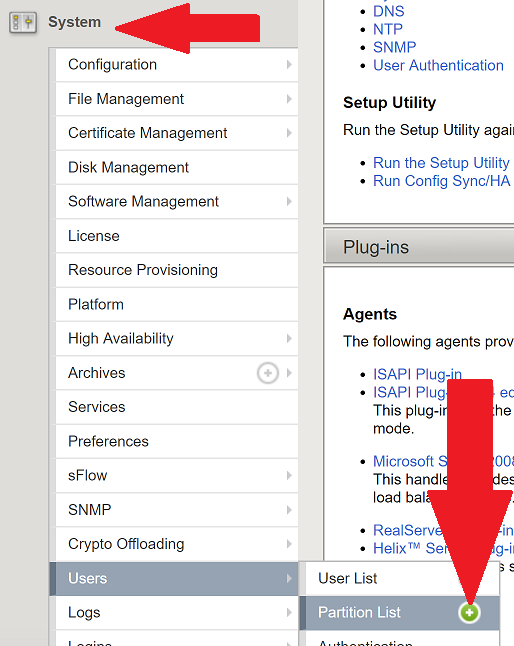

Lab – Deploy Container Ingress Services¶
During this excercise we will deploy the F5 BIG-IP Controller for Kubernetes. This is part of the Container Ingress Services that is used to monitor the state of the Kubernetes cluster and push configuration changes to the BIG-IP.
Note that Container Ingress Services is a single management plane process that monitors Kubernetes API events and pushes changes to the BIG-IP that is OUTSIDE the Kubernetes cluster (BIG-IP does not run as a container). This is different than the NGINX Ingress Controller that is both a management plane AND data plane process.
Create kubernetes partition on BIG-IP¶
The F5 BIG-IP Controller for Kubernetes makes use of an administrative partition to store its configuration. You need to create this partition before deploying the controller.
From the Windows JumpHost access the BIG-IP Management GUI via Chrome.
Tip
Credentials for Windows JumpHost are “user:user” Credentials for BIG-IP are “admin:admin”
Under Systems -> Users -> Partitions
Click on the “+”.
{kind=link}
Create a partition named “kubernetes” and click finish.

Create a Secret for BIG-IP¶
The user credentials for the BIG-IP need to be stored in a Kubernetes secret. On the K8S Master node run the following:
$ kubectl create secret generic bigip-login --namespace kube-system --from-literal=username=admin --from-literal=password=admin
Service Account¶
You will also need a Service Account that the controller will run as.
$ kubectl apply -f ~/f5-cis/cis-sa.yaml -n kube-system
RBAC Permissions¶
Grant appropriate permissions to the Service Account.
$ kubectl apply -f ~/f5-cis/cis-rbac.yaml -n kube-system
Deploy the Controller¶
The following command will deploy the controller.
$ kubectl apply -f ~/f5-cis/f5-cc-deployment.yaml -n kube-system
Update Services¶
To enable the controller to “discover” the NGINX+ Ingress we need to
add labels to the existing NodePort service that we created previously.
An example of what the complete service looks like:
apiVersion: v1
kind: Service
metadata:
name: nginx-ingress
namespace: nginx-ingress
labels:
cis.f5.com/as3-tenant: AS3
cis.f5.com/as3-app: MyApps
cis.f5.com/as3-pool: ingress_pool
spec:
type: NodePort
ports:
- port: 80
targetPort: 80
protocol: TCP
name: http
selector:
app: nginx-ingress
In the previous example we will associate the Kubernetes service nginx-ingress with the BIG-IP pool object /AS3/MyApps/ingress_pool. The pool object will be created by an Application Services Extension 3 (AS3) declaration (described in the next lab).
We also need separate services per port in order to specify unique pools.
$ kubectl apply -f ~/f5-cis/nodeport-cis-80.yaml
$ kubectl apply -f ~/f5-cis/nodeport-cis-443.yaml
$ kubectl apply -f ~/f5-cis/nodeport-cis-8080.yaml